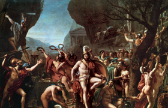

Lezione 3  Il mondo greco
Il mondo greco

Verso l’VIII secolo a.C. si verificarono cambiamenti fondamentali per il successivo sviluppo della storia greca. Innanzitutto nacque il modello della polis, una città-stato concepita come una comunità di cittadini uguali tra loro. In secondo luogo lo sviluppo economico, originato da una rivoluzione agraria, diede il via ad un aumento demografico, di cui tuttavia non fu in grado di seguire il ritmo, a causa della scarsità e della povertà dei terreni coltivabili in Grecia. Nel frattempo ripresero anche le navigazioni e con esse le possibilità di commercio. È soprattutto questa situazione demografica ed economica a portare nei secoli VII-VI a.C. alla seconda colonizzazione, anche se non bisogna trascurare l’importanza di fattori politici: a volte i coloni erano membri di una parte politica sconfitta che decideva di lasciare la madrepatria. L’espansione greca ricercò terre fertili e dal clima simile a quello della madrepatria, che facilitassero il più possibile l’insediamento della popolazione: le colonie sorsero perciò principalmente sulle coste mediterranee di Francia, Spagna, Nord Africa e in particolar modo sulle coste dell’Italia meridionale. Altre colonie sorsero sulle coste del mar Nero. La fondazione di una nuova colonia era un’iniziativa organizzata dall’intera polis, che allestiva il necessario per la spedizione e nominava un ecísta, ovvero un “fondatore”, per guidare il gruppo; inoltre venivano consultati oracoli per assicurarsi il successo del viaggio. Tra la colonia e la madrepatria si conservò uno stretto legame. Tuttavia nelle nuove città si crearono spesso equilibri sociali e politici differenti: prive del peso delle tradizioni e dell’autorità delle famiglie dominanti, con molte terre da spartire in parti uguali, le colonie svilupparono una società più egualitaria. Non a caso infatti i primi esempi di leggi scritte si verificarono nella Magna Grecia. Di qui inoltre erano originari molti dei primi filosofi.